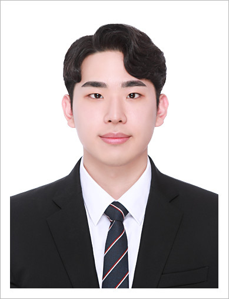
THE PEOPLE BEHIND THE RESEARCH
Great ideas.
Even better together.
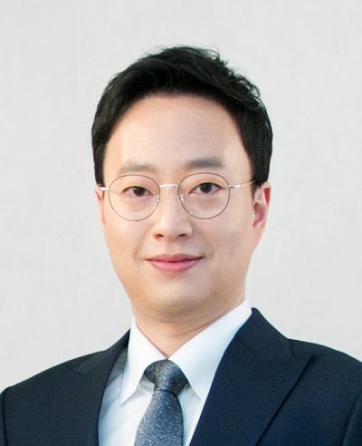
PRINCIPAL INVESTIGATOR
Principal Research Scientist
Sungwook YangPh.D.
Korea Institute of Science and Technology
KIST · Seoul, Republic of Korea
Research interests
Education
- Ph.D.
Robotics Institute, Carnegie Mellon University, Pittsburgh, PA, USA
- M.S
Mechanical and Aerospace Engineering, Seoul National University, Seoul, Korea
- B.S
Mechanical and Aerospace Engineering, Seoul National University, Seoul, Korea
Previous research areas
Members
Ph.D. Students
M.S. Students
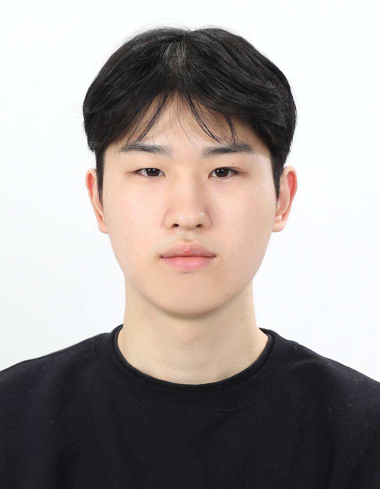
Research interests
Undergraduate Researchers
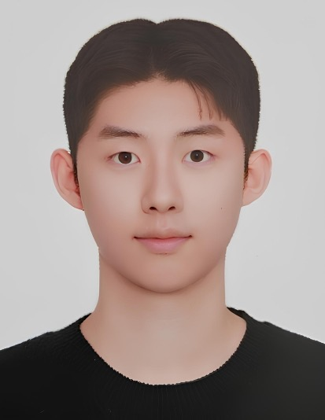
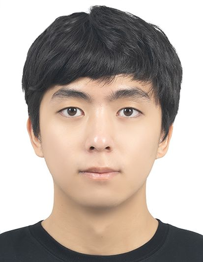
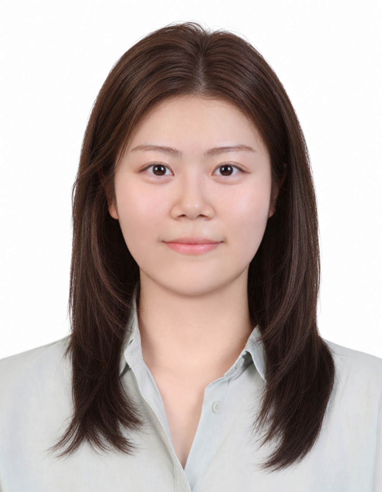
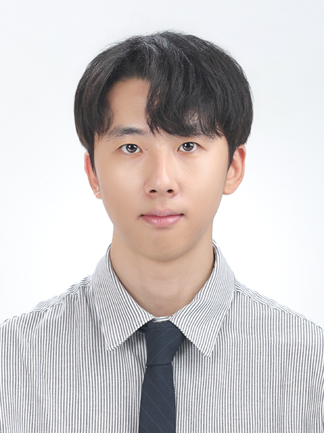
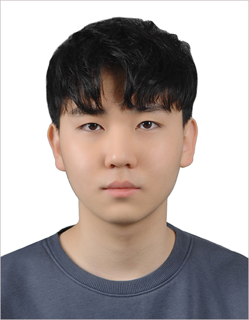
Research Interns
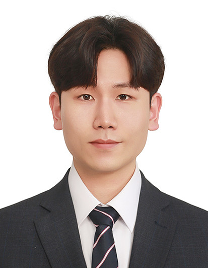
Research interests
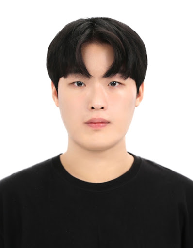
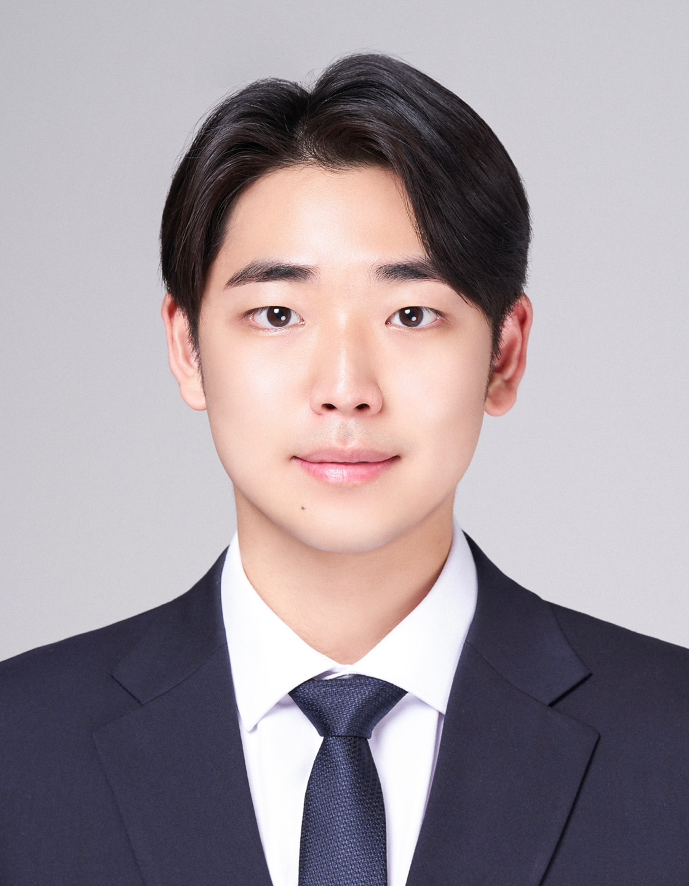
Alumni
Post-Doc.
2026
허시환(Senior Researcher in KIST)
Master
Research Intern
Internship Students
2026
박철주
정현우
2025
송채윤 (Samsung Electronics) 자코비안준호 (M.S. in Kwanwoon University)
2024
양재민 (M.S. in Korea University)
2023
정해은 (M.S. in Yonsei University) 장강민 (M.S. in KAIST) 차준근 황원택
2022
박효재 (Ph.D. in DIGIST) 양유진 김보슬 권성현 홍현정
장재우 (Hyundai Mobis) 김진 (Ph.D. in KAIST)
2021
박채원 (Ph.D. in POSTECH) 노주형 (Ph.D. in KAIST) 이영재 장현도
2020
김영훈
2019
경민욱 한원준 김지호 김상혁
2018
한유진
2017
김동섭 오병의 윤한솔 이경동
2016
김희경 윤재영